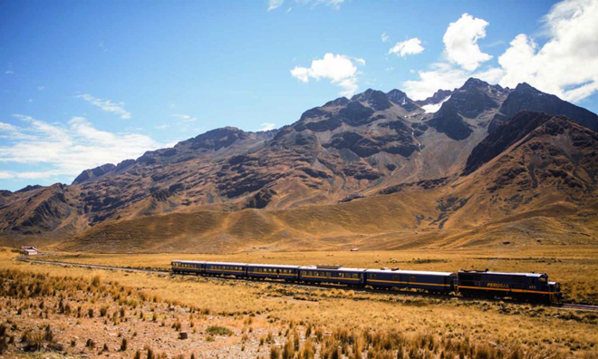
After our trek we extended our stay in Peru by taking the Andean Express Train (owned by the Orient Express company) from Cuzco down to Puno. The interior deluxe decor was of the 1920's era and there was first class catering facilities on board.
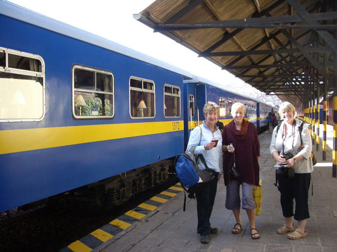
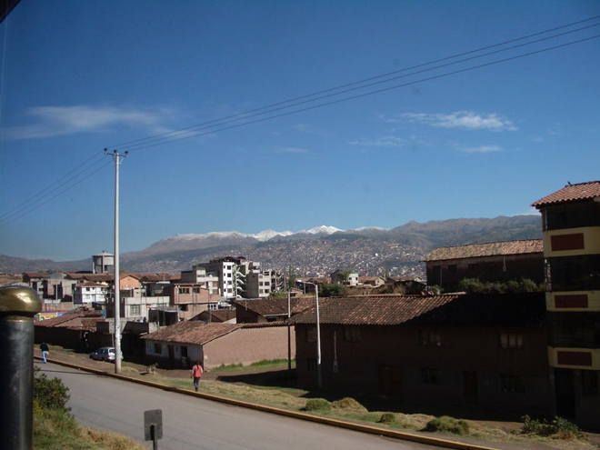
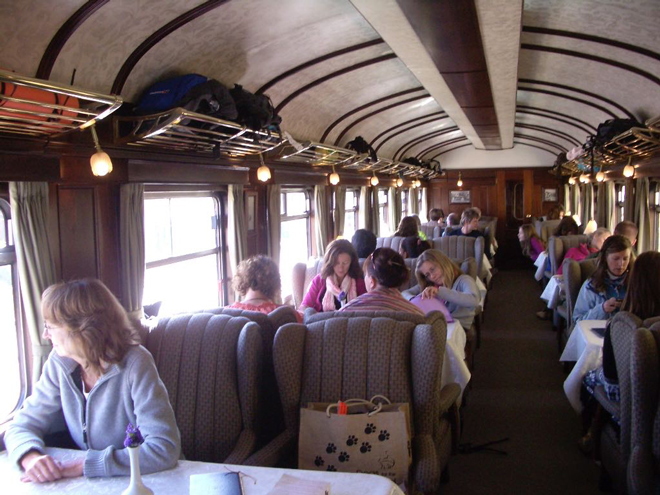
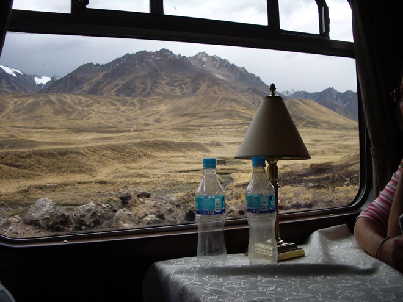
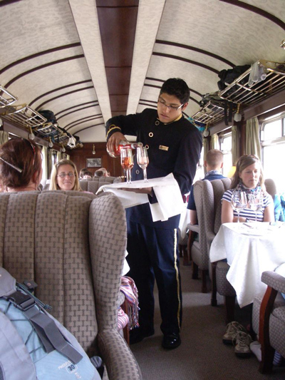
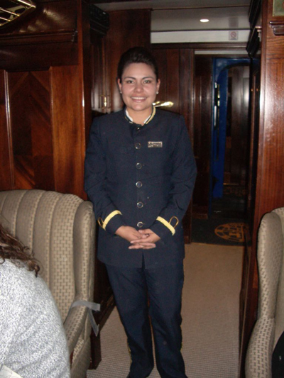
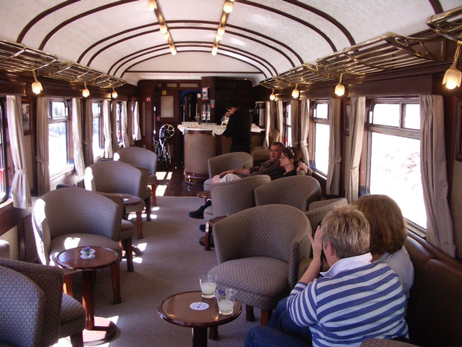
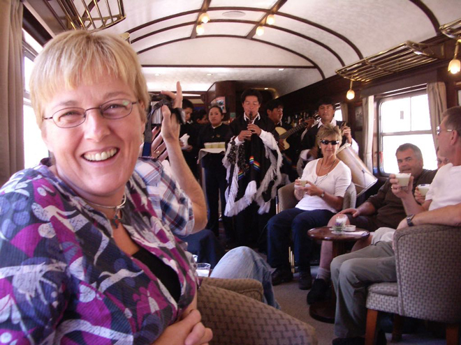
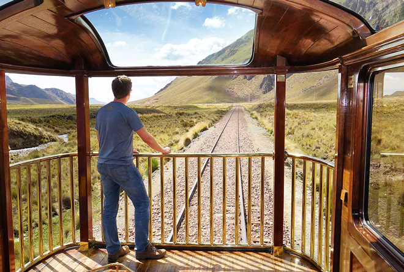
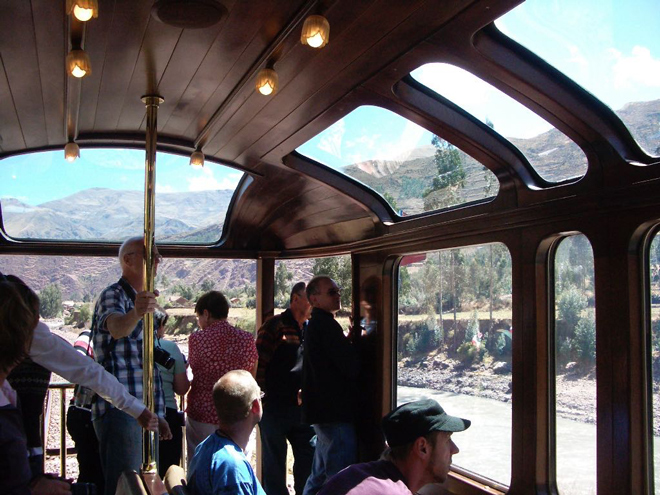
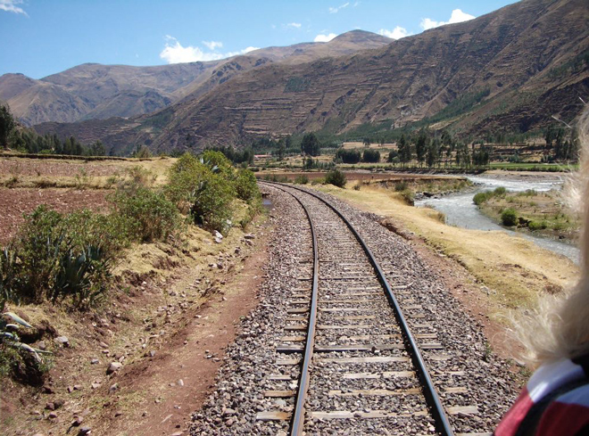
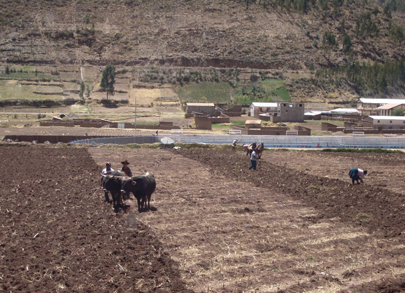
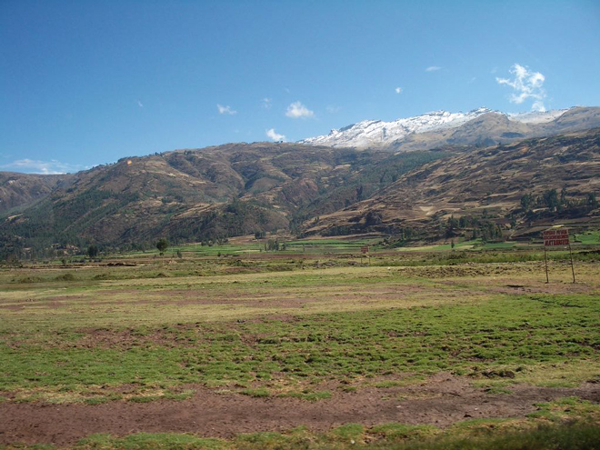
Alpaca farming was big business on the plains of Peru. We passed several large herds of the animals.
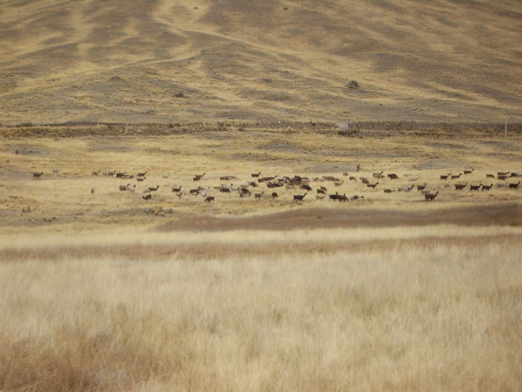
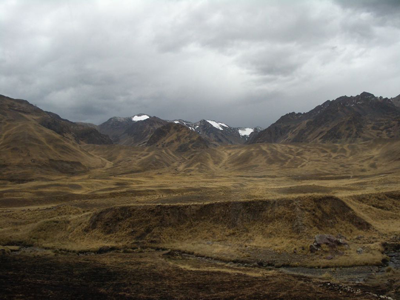
As if by magic, the train stopped at a halt in the middle of nowhere and we all disembarked to discover a 'shopping opportunity': more vicuña knits and scarves than you could shake a stick at ...
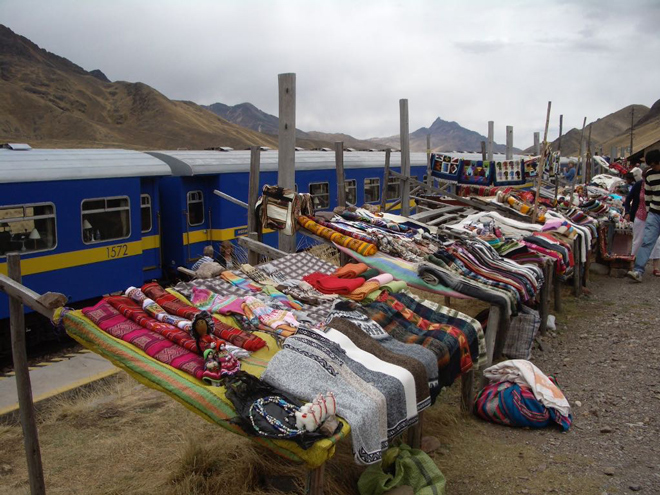
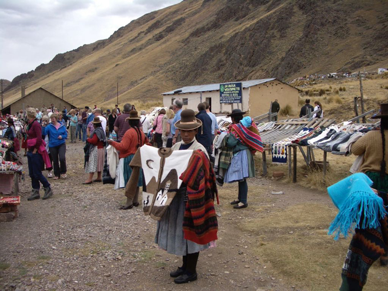
After the beauty of the countryside we passed through, it was a shock to arrive into Puno which looked very shabby and run-down ...
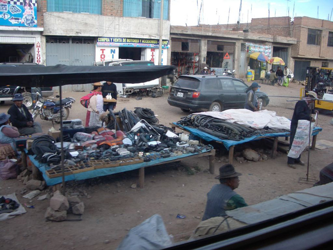